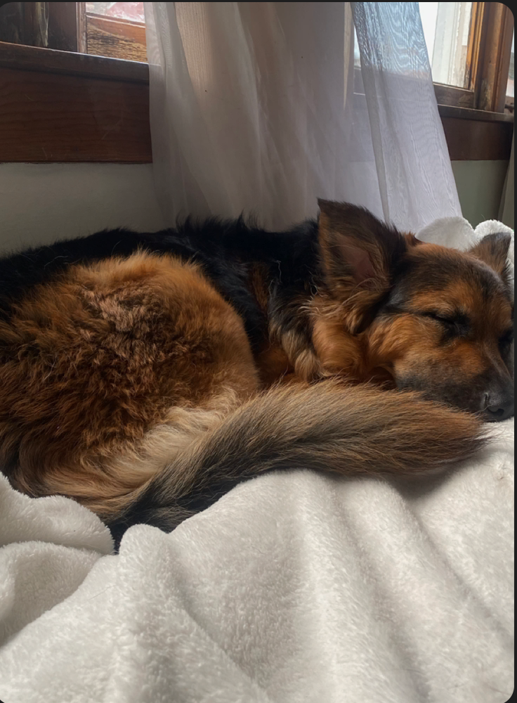
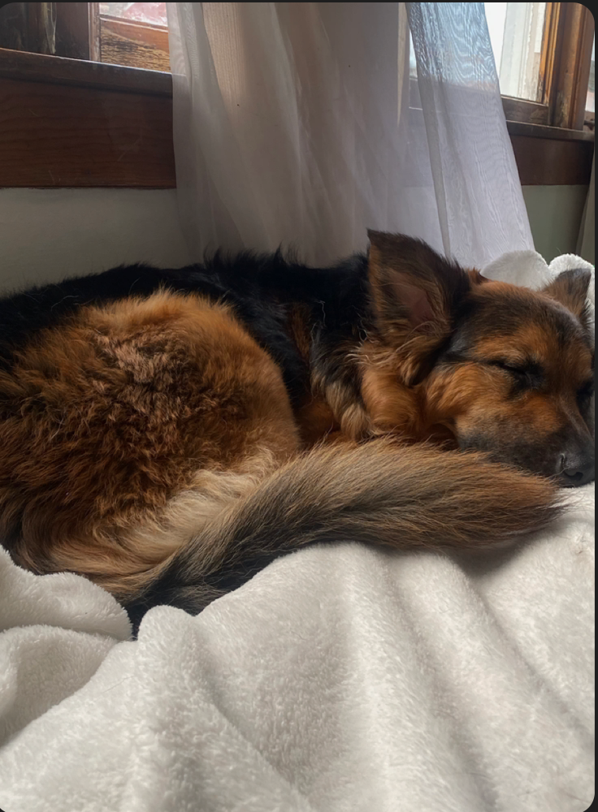
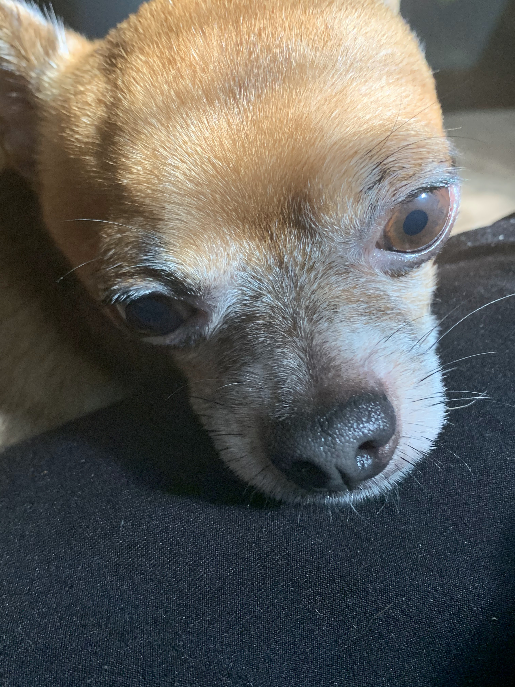
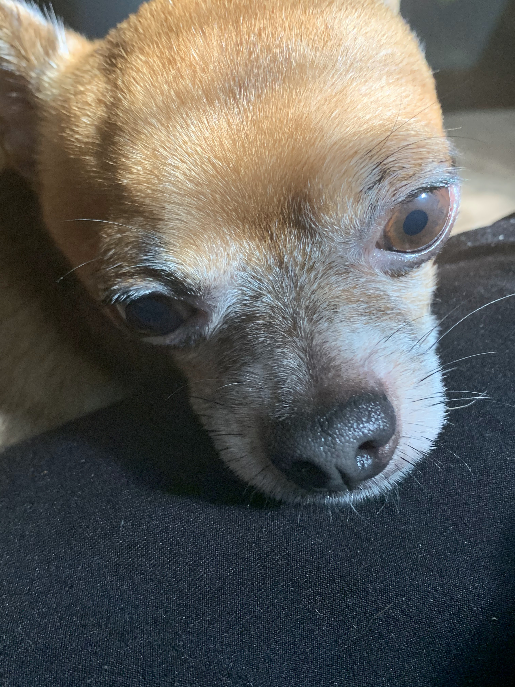

Milo
Milo is a 6 year old schnoodle. He is super energetic and his favorite game is fetch, which he wants to play all the time — yes, even when it’s pitch black outside or the weather is unideal. Milo is also loving and kind, at least to humans. When he’s around other dogs, he is either jealous of the attention they’re receiving, or ignores them because he has other priorities (chasing a ball).
Milo is also a pretty smart dog, although he doesn't always use it for good. He can roll over on command, and use his sense of scent to find a hidden treat. But he’s also figured out some loopholes to get what he wants. For example, he has been trained to nudge the bell near the front door to indicate that he needs to be walked. Recently, though, he’s learned that he can just pretend like he wants to go on a walk, but instead lead us around the house to the backyard so he can play. In case it wasn’t clear: Milo loves to play. Although he can be sneaky, my family loves him more than anything.
Photo Gallery


Likes
- Playing fetch
- Table scraps
- Belly rubs
Dollar

Dollar is a 1 and a half year old Australian shepherd. His favorite games are tug of war and fetch. Sometimes, when he goes out for walks, he will pick up a stick to get his owners to play fetch with him. At night, he likes to cuddle with his owners. He would snuggle up and put his nose on their arm to let them know that he wants pets.
Dollar has a gourmet taste for food. He hates eating kibble and will only eat premium chicken bits with eggs. His favorite snacks are bell peppers, beef bits, and peanut butter. Dollar is incredibly smart and will only do tricks when you present him with snacks.
Photo Gallery
Likes
- Bacon bits
- Taking walks in the park
- Jumping on the sofa
Maui

Maui is a two-year-old mini-doodle who thinks he is as big as a German shepherd. This mindset allows him to voice his opinion, especially when demanding food or attention. He is also a classic momma's boy, as he has learned if he is annoying enough, he can get anything he demands.
During his lounging time, he gets to the highest chair he can get on and stares outside, waiting either for guests or belly rubs. He also has the tendency to force his mother to go to sleep as soon as his father goes to bed.
Photo Gallery


Likes
- Car rides
- Being chased
- Sitting in high places
Luna

Luna is a German shepherd mix and a fireball of energy. Oftentimes, destroying anything in her path she will take and hide all your socks, shoes, and clothes for her to chew on. She loves playing catch at the park, it always gives her the zoomies.
Luna is a very jealous, loving, and protective dog. She really embraces her inner chihuahua and will bark at any stranger, car, or noise at night. She makes the perfect guard dog. But she is not at all aggressive. Luna is all bark no bite!
Photo Gallery
 



Likes
- Chicken
- The park
- Belly rubs
Yugi

Yugi is a 7 year old chihuahua who loves love and adores attention. A member of the sassy dog community, he is full of personality and character with a response for everything. Nicknamed King Yugi, he holds himself as a true royal and leader of the home, being given all the luxuries in life by his humans.
With the ability to love beyond his small body, Yugi is an attached lap dog that loves to be your sidekick. Protective, caring, and cuddly, there is never a time he isn’t there to support you and is always prepared for a short-notice nap time.
Photo Gallery
 



Likes
- Cuddling
- Sleeping
- Doing tricks for treats